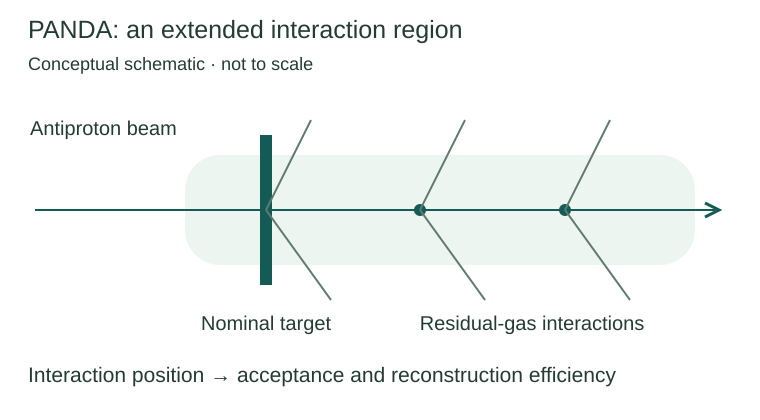
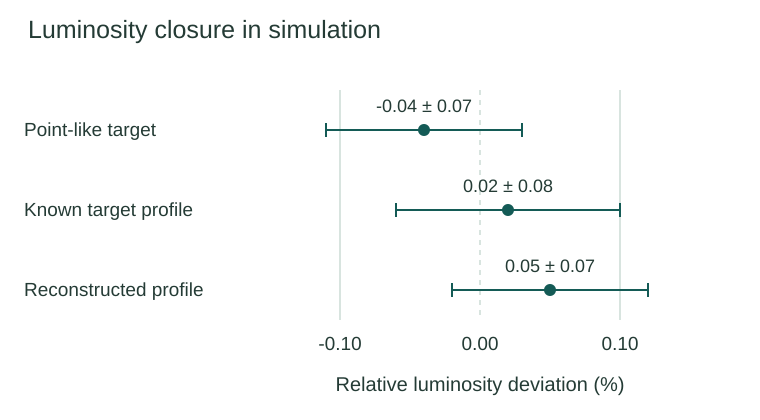
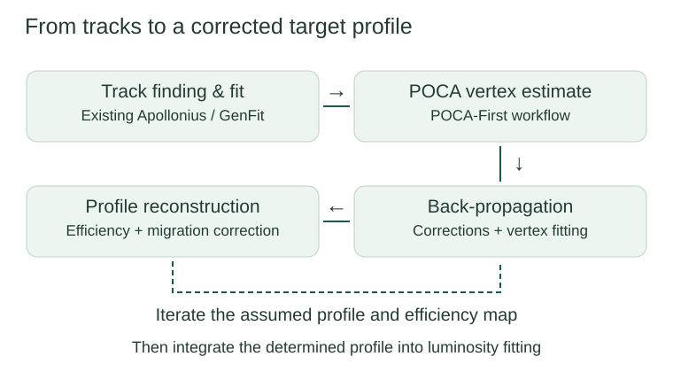
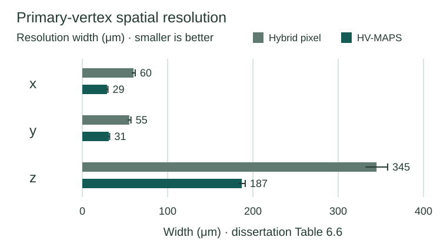

EXPERIMENTAL PARTICLE PHYSICS
Research in experimental particle physics
Understanding the interaction region. Reconstructing displaced events. Validating precision measurements.
One scientific question, a connected methodology
PANDA at FAIR is designed to study hadron physics using antiproton interactions, including antiproton–proton collisions. Cross-section measurements require a reliable luminosity: the normalization connecting a measured event yield to the underlying interaction probability. An extended interaction region complicates this normalization because detector acceptance and reconstruction efficiency depend on where an event occurs.
Residual gas from the target can produce interactions away from the nominal interaction point. My doctoral research asks how this spatial distribution can be reconstructed and incorporated into luminosity determination. The studies connect detector-design simulation, track and vertex reconstruction, position-dependent efficiency correction and numerical fitting.
DOCTORAL RESEARCH · 2026
Luminosity Determination with Restgas Background from the Target for the PANDA Experiment
Dr. rer. nat. in Physics · Ruhr University Bochum, Germany · PANDA Collaboration
Dissertation and academic materials →

RESEARCH STUDY 01
Precision Luminosity Determination for PANDA
Scientific motivation
Elastic antiproton–proton scattering provides a reference process for luminosity determination. To interpret its reconstructed angular distributions, the analysis must account for detector acceptance, resolution, the beam and the spatial distribution of interactions. A mismodeled residual-gas contribution can bias the fitted normalization.
Methods and my contributions
I extended and maintained the existing LuminosityFit C++ framework to study distributed targets and realistic beam conditions, including beam offsets, widths, tilt and divergence. The fitting workflow combines the scattering model with detector response and effective acceptance. My work included numerical modeling, debugging, PandaRoot integration and Monte Carlo validation; I was not the original author of the framework.
The final analysis uses the reconstructed target distribution as an input to the luminosity fit. This closes the loop between spatial reconstruction and a precision measurement, instead of assuming that the target distribution is already known.
I completed the framework's final integration and validation, delivering LuminosityFit for use by the PANDA Collaboration.
Integrated simulation result
Using the determined target profile, the integrated reconstruction and fitting chain yielded a relative luminosity deviation of (0.05 ± 0.07)% from simulated ground truth. The study used a beam momentum of 4.06 GeV/c and an interaction-point window of |x|, |y| < 1 cm and |z| < 5 cm. The result is a closure test under these simulation conditions; it does not remove the need to study systematic uncertainties.


RESEARCH STUDY 02
Particle Tracking and Displaced-Vertex Reconstruction
Scientific motivation
Reconstruction that assumes every particle originates at the nominal interaction point is poorly matched to interactions distributed along the beam. The interaction vertex must instead be estimated from reconstructed tracks, and the efficiency must be evaluated as a function of position.
Methods and original contributions
I developed the POCA-First / POCA-to-point workflow, using the point of closest approach of tracks to estimate a displaced interaction vertex. Existing Apollonius track-finding and GenFit/Kalman-fitting components were integrated and adapted. Tracks are back-propagated to the estimated vertex, followed by momentum/path-length corrections, particle identification and vertex fitting.
I also developed simulation-based forward modeling and iterative efficiency corrections for the spatial target distribution. Reconstruction and migration effects enter a profile-dependent correction; the corrected profile is then used to refine the next simulation input.


The reconstruction algorithm was implemented in C++, validated in simulation and delivered to the PANDA Collaboration, where it was adopted and used by other researchers.
Delivered algorithm: simulation validation
The summary results from repeated simulation studies showed less than 1% relative deviation between reconstructed interaction-density profile and simulated ground truth.
Controlled displaced-interaction test
With a reconstructed POCA vertex, event reconstruction efficiency was 74.4%, compared with 74.2% using the true Monte Carlo vertex (Table 7.1). This comparison concerns the controlled displaced-interaction setup. The separate distributed-interaction study gives 59.1% versus a 61.4% true-vertex reference; the two setups should not be combined.
RESEARCH STUDY 03
Silicon Pixel Detector Simulation and Performance Studies
Scientific motivation
Spatial resolution and detector material affect how well charged-particle trajectories and decay vertices can be reconstructed. Vertex performance is especially relevant when the interaction or decay occurs away from the nominal collision point.
Simulation and contributions
I implemented an alternative High-Voltage Monolithic Active Pixel Sensor (HV-MAPS) geometry for the Micro Vertex Detector in PandaRoot. Monte Carlo studies compared this configuration with the baseline hybrid-pixel design through tracking, momentum and vertex reconstruction, and a common D-meson reconstruction selection. The implementation includes sensor geometry, physical parameters and dedicated simulation classes. Comparative Monte Carlo studies cover different particle trajectories and reconstruction stages.
Comparative results
The simulated D-meson reconstruction efficiency after selection increased from 3.33 ± 0.15% for hybrid pixels to 9.26 ± 0.24% for HV-MAPS, about 2.8 times the baseline (Table 6.4). These figures describe detector configurations, not execution speed.
Track-level simulation comparisons also showed approximately 10% better momentum resolution in the studied particle samples.
Primary-vertex resolution widths in x, y and z changed from 60, 55, 345 μm to 29, 31, 187 μm (Table 6.6): approximately 44–52% smaller widths, depending on coordinate.


Research Interests
Building on the completed studies above, I am interested in precision measurements in hadron physics; tracking and detector reconstruction; Monte Carlo simulation and uncertainty quantification; and statistical inference and computational modeling.
Future directions I would like to explore include data-driven event-generator modeling and tuning, and AI-assisted scientific computing. These are prospective interests, rather than claims of completed doctoral work in generator tuning.
Discuss research and collaboration →Scientific sources
Jinxin Li (2026), Luminosity Determination with Restgas Background from the Target for the PANDA Experiment, doctoral dissertation, Ruhr University Bochum.
- Chapter 6, Tables 6.4 and 6.6: detector-design simulation.
- Chapter 7, Table 7.1: controlled displaced-vertex reconstruction.
- Chapter 9, Table 9.2: integrated luminosity closure.